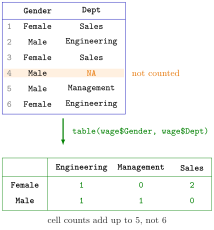

Contingency Table¶
Definition¶
A contingency table counts how many observations fall into each category of one categorical variable, or into each combination of categories of several variables.
table(x)gives a one-way table: one count per distinct value (or per level, ifxis a factor).table(x, y)gives a two-way table: the values ofxlabel the rows, the values ofythe columns, and the cell in row and column counts the observations withxin category andyin category .
table() works on factors, character vectors and numeric vectors. Missing values are left out unless useNA = "ifany" is given, which adds a column or row <NA> when there are any.
Interpretation¶
A contingency table answers "how many are there of each kind?" and, with two variables, "how do the categories combine?". How many workers are in each department? How many women and men are there in each seniority level? These counts are the categorical counterpart of the summary statistics of a numeric variable.

The figure builds a two-way table from six workers. Each row of the data adds 1 to exactly one cell, the cell of its gender and its department; the worker with a missing department is not counted, so the five cell counts add up to 5, not 6. The row totals, 3 women and 2 men with a known department, are the counts of a one-way table of Gender for those five workers.
The order of the rows and columns follows the levels: alphabetical for text, the level order for a factor. A factor also lists levels that do not occur, with count 0, which makes tables comparable between subsets of the data. Dividing the counts by their total gives relative frequencies, the sample version of a probability mass function; later in the course prop.table(table(x)) does exactly that for simulated draws.
The common mistake is to overlook the missing values. By default table() drops NA silently, so the counts may add up to fewer observations than the data have. Check with useNA = "ifany", or compare sum(table(x)) with length(x) (missing values).
Key Results¶
table(x)counts each distinct value ofx;table(x, y)counts each combination of a value ofx(rows) and a value ofy(columns).- The counts of a table add up to the number of observations without missing values in the variables used.
useNA = "ifany"adds a count forNAwhen missing values occur.- For a factor, every level appears in the table, in level order, including levels with count 0.
table()does not need factors: character and numeric vectors are counted per distinct value.
Examples¶
1. One-way tables. Counting departments in a small made-up extract of a wage data set.
dept <- c("Sales", "Engineering", "Sales", "Management", "Engineering", "Sales")
table(dept)
#> dept
#> Engineering Management Sales
#> 2 1 3
sen <- c(3, 1, 5, 2, 3, 4)
table(sen)
#> sen
#> 1 2 3 4 5
#> 1 1 2 1 1
Text is listed in alphabetical order and numbers in increasing order; seniority code 3 occurs twice.
2. A two-way table. Gender against department for six workers, one with a missing department.
wage <- data.frame(
Gender = c("Female", "Male", "Female", "Male", "Male", "Female"),
Dept = c("Sales", "Engineering", "Sales", NA, "Management", "Engineering")
)
table(wage$Gender, wage$Dept)
#>
#> Engineering Management Sales
#> Female 1 0 2
#> Male 1 1 0
sum(table(wage$Gender, wage$Dept))
#> [1] 5
Two women work in Sales and one in Engineering; the man with a missing department does not appear, so the counts add up to 5. This is the table in the figure.
3. Making missing values visible. The same data with useNA = "ifany".
wage <- data.frame(
Gender = c("Female", "Male", "Female", "Male", "Male", "Female"),
Dept = c("Sales", "Engineering", "Sales", NA, "Management", "Engineering")
)
table(wage$Dept)
#>
#> Engineering Management Sales
#> 2 1 2
table(wage$Dept, useNA = "ifany")
#>
#> Engineering Management Sales <NA>
#> 2 1 2 1
4. Factors keep empty categories. Counting seniority levels, once as a factor with all five levels and once as plain numbers.
sen <- c(3, 1, 3, 2, 3, 2)
sen_f <- factor(sen, levels = 1:5,
labels = c("low", "medium-low", "medium", "medium-high", "high"),
ordered = TRUE)
table(sen_f)
#> sen_f
#> low medium-low medium medium-high high
#> 1 2 3 0 0
table(sen)
#> sen
#> 1 2 3
#> 1 2 3
gender <- c("Male", "Female", "Female", "Male", "Female", "Male")
table(sen_f, gender)
#> gender
#> sen_f Female Male
#> low 1 0
#> medium-low 0 2
#> medium 2 1
#> medium-high 0 0
#> high 0 0
Nobody has seniority 4 or 5, yet the factor table shows those levels with 0; the numeric table only lists the values that occur. The two-way table counts each combination of seniority level and gender.
Prerequisites¶
Related Concepts¶
- Counting with Logical Vectors
- Summary Statistics in R
- Membership Operator %in%
- Probability Mass Function
Sources¶
- Programming for EOR · Week 2
- Lecture 2 script, Part 2 (Working with Data Frames, Built-in Functions, and Factors), section Factor Variables and Contingency Tables; Exercises 4 and 5 of Part 2
Aliases: table(), table, frequency table, cross-tabulation, cross tab, two-way table, useNA Keywords: table(), one-way and two-way counts, useNA = "ifany", counts per category
Last updated: 10 November 2026 16:43
Contingency TableChecking Distributions by SimulationFactorData FrameMissing ValuesCounting with Logical VectorsSummary Statistics in RMembership Operator %in%Probability Mass Function